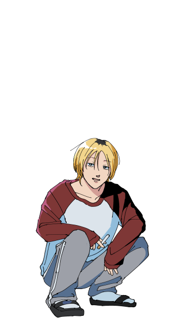
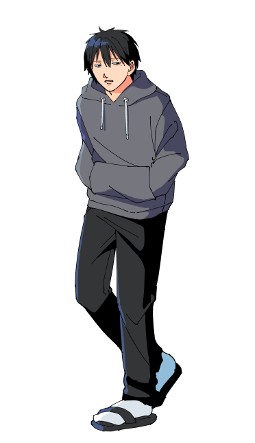
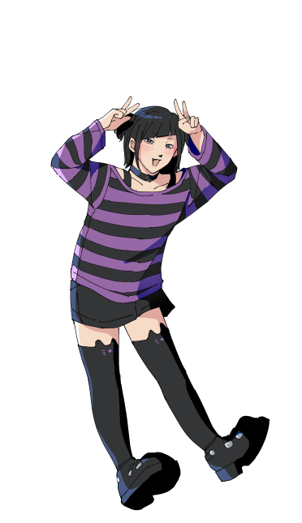
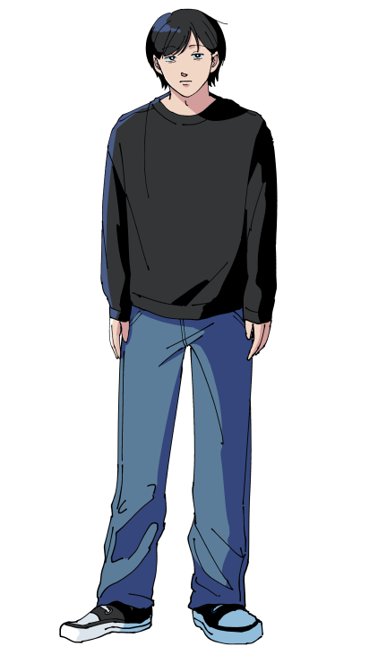
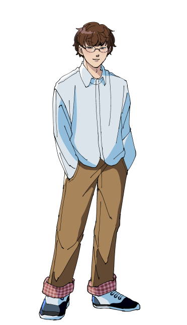
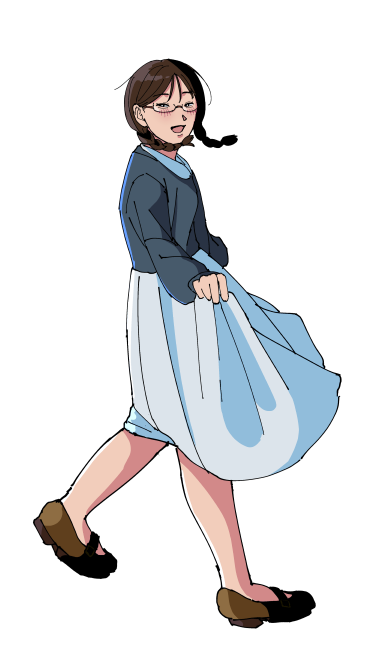
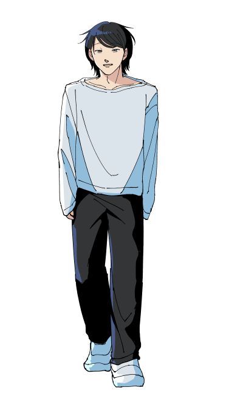
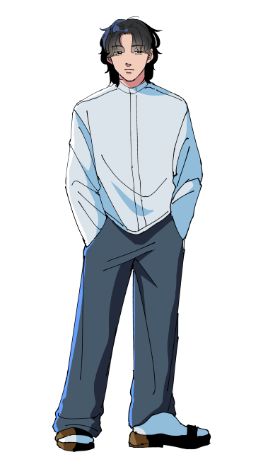

日本ウオ
梅井芸能事務所
梅井芸能養成所38期。芸歴3年目。
梅井演芸劇場東京・スタークラス所属。
関西弁の正統派しゃべくり漫才。
全国各地飛び回る梅井芸能の元気印。


おっとっと
梅井芸能事務所
梅井芸能養成所38期。芸歴3年目。
梅井演芸劇場東京・スタークラス所属。
実家太シティボーイたちによる脱力系漫才。
やる気はあるが覇気はない。


ユウシュウのビ
梅井芸能事務所
梅井芸能養成所39期。芸歴2年目。
梅井演芸劇場東京・ユースクラス所属。
女子高生二人の奇怪バイオレンス漫才。
お互いにお互いしか友達がいない。


ダダダ田
アマチュア
無所属アマチュア。芸歴6年目。
うだつの上がらない無名漫才師。
0歳から一緒の幼馴染同士。
同居しているが毎日のように喧嘩している。


耄碌パソコン研究会
アマチュア
無所属アマチュア。芸歴3年目。
インターネット大好きな二人によるサブカル漫才。
テンションも身長も凹凸。
現在文尾（左）の失踪により活動休止中。



トリリオン
梅井芸能事務所
梅井芸能養成所39期。芸歴1年目。
梅井演芸劇場東京・ユースクラス所属。
仲良し大学生3人組による優しいコント。
常にほんわかした空気感なので、
「梅井芸能のオアシス」と呼ばれている。


井上100円ショップ
梅井芸能事務所
梅井芸能養成所31期。芸歴10年目。
梅井演芸劇場東京・スタークラス所属。
漫談・フリップ芸を得意とするダウナー系ピン芸人。
井上自身も一応若手寄りだが、梅井演芸劇場の姉貴ポジション。
ABOUT
木口しょうゆの自創作紹介サイトです。
どこかで活動している架空の芸人たちの情報が載っています。